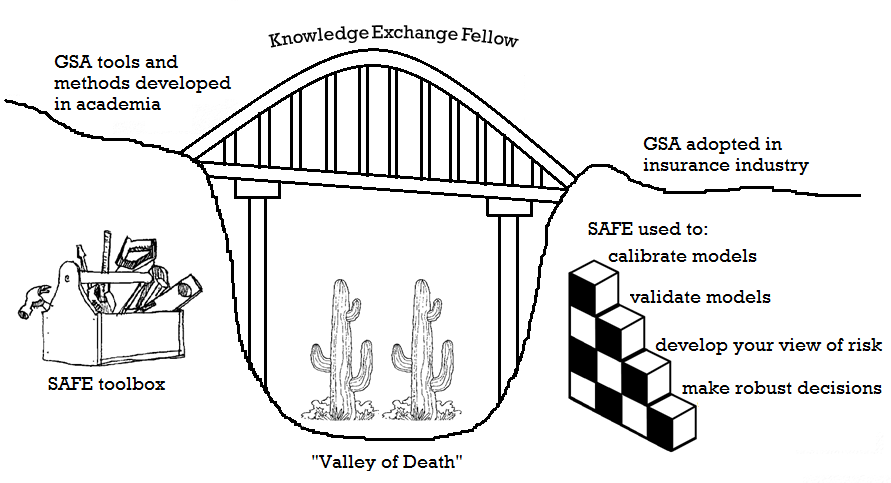

Transferring Sensitivity Analysis to the Re-Insurance Sector

Methods (e.g. Global Sensitivity Analysis) and tools (e.g. the SAFE toolbox) to adequately capture uncertainty in mathematical models are available in academia, but tailored workflows and case studies (close to the area of expertise of model users) are needed to demonstrate their benefits and to accelerate their uptake in industry.
The objective of my fellowship is to transfer methods, tools and expertise to improve the understanding and consideration of uncertainty in mathematical models used in the re-insurance industry. By better capturing uncertainty, we can achieve a more robust decision-making process, as the chance of unexpected surprises is reduced.
Activities I’ve done during my fellowship include:
In order to overcome the so-called “valley of death”1 (the gap between research development and uptake by industry) I have:
developed several case studies with re-insurance companies and model vendors, which demonstrate the benefit of using Global Sensitivity Analysis (GSA) to help the catastrophe model building process and forming their view of risk.
developed training material in the form of workflows (Rmarkdown or Jupyter Notebooks) which guide the user through the steps needed to apply GSA with the SAFE toolbox and to interpret the results, using as case studies models used in the re/insurance industry.
disseminated the knowledge gained through these case studies to the wider re/insurance sector through presentations and workshops at conferences.
Legacy statement
I hope that the work carried out during my fellowship has set the path for the re-insurance sector to increase ownership of the mathematical models in use, by gaining an improved understanding of where the uncertainties lie in their modelling process. This allows to prioritise efforts to reduce the major sources of uncertainty and increases the confidence in the model use, and in the business decisions that will follow.
If you are interested in bringing GSA into your current practice:
you can download the SAFE toolbox in R, Python or MATLAB from here;
you can use the workflows in the training material as a template to apply GSA to your case;
contact the team to scope potential collaborations/arrange a workshop at your organisation.
Dr Valentina Noacco
Valentina received her MSc in Water and Environmental Management in 2012 and her PhD in Civil Engineering in 2017 (“Investigation of long-term drivers and controls on fluvial dissolved organic carbon and nitrate in the UK”) from the University of Bristol. In 2017 she held a 7-month research project at the University of Bristol on Applied Sensitivity Analysis. Since November 2017 she holds a Knowledge Exchange Fellowship.
I’ll be on maternity leave until the end of June 2021.
Go to the contact page to see how you can reach the team during my absence.

This work has been funded by the UK Natural Environment Research Council (NERC) (November 2017 to September 2021):
KE Fellowship: NE/R003734/1.
1 - The Valley of Death as Context for Role Theory in Product Innovation